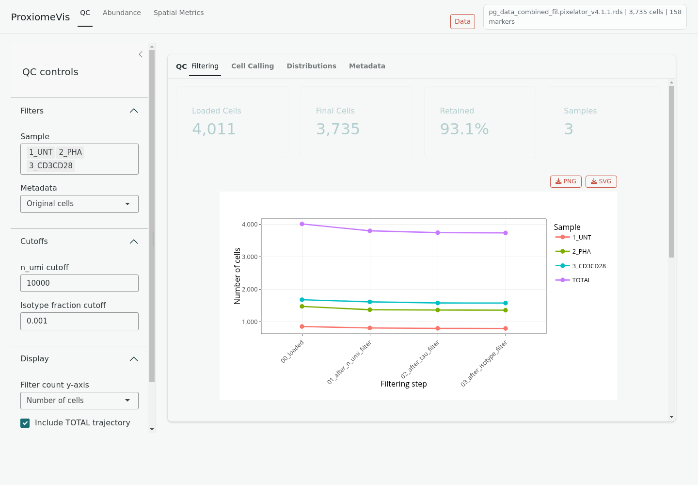

ProxiomeVis
ProxiomeVis is an interactive Shiny application for exploring Pixelator-derived single-cell protein data. It is designed for reviewing QC, marker abundance, cell annotation, differential readouts, marker self-clustering, marker-pair colocalization, and selected Pixelator graph layouts.

What the app shows
- QC: filtering summaries, cell-calling rank plots, QC metric distributions, and original metadata.
- Abundance: marker abundance on embeddings, marker distributions, cell-type composition, annotation heatmaps, and differential abundance.
- Spatial Metrics: clustering and colocalization readouts from stored
Pixelator proximity outputs, plus an interactive 3D layout view when
.layout.pxlfiles are available.
The app reads values already stored in the loaded Pixelator-compatible RDS file. It does not rerun expensive Pixelator proximity calculations during app use.
Typical workflow
- Open the app.
- Load the demo data or enter a readable RDS path.
- Review QC first.
- Explore abundance and annotation.
- Use Spatial Metrics for clustering, colocalization, heatmaps, differential comparisons, and 3D layouts.
- Adjust plot Options and download figures where download buttons are available.